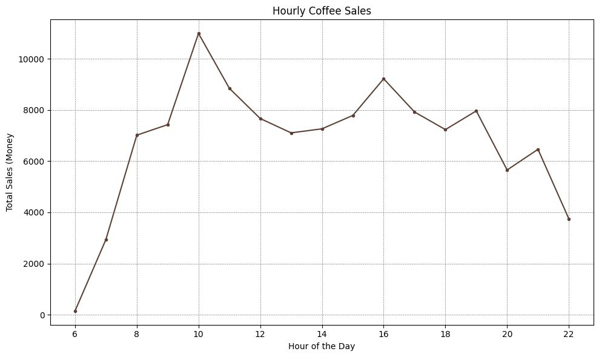
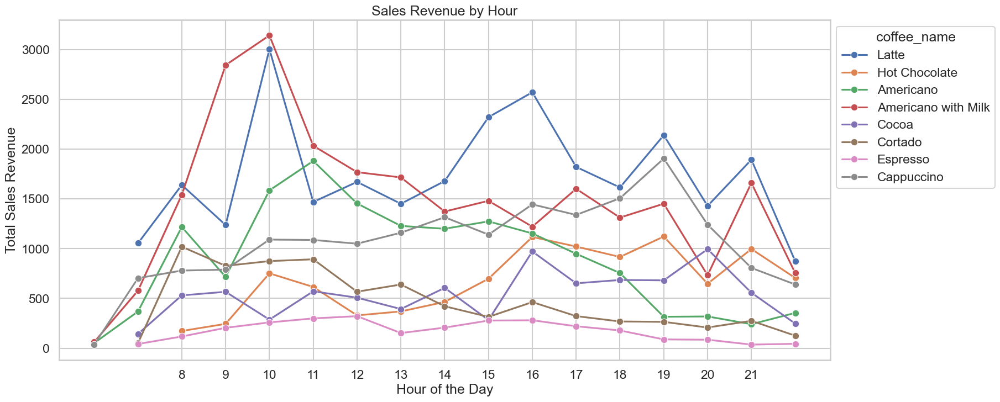
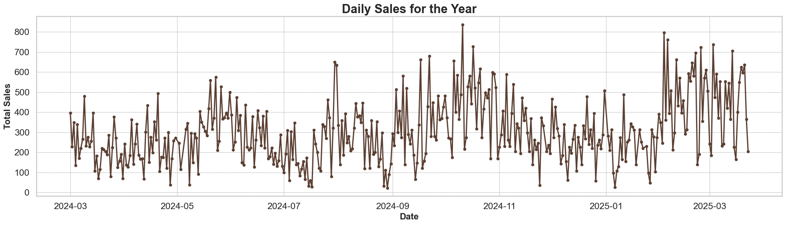
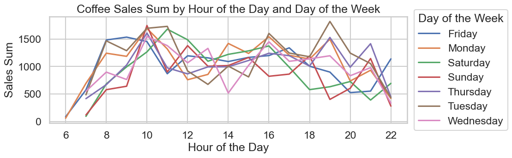
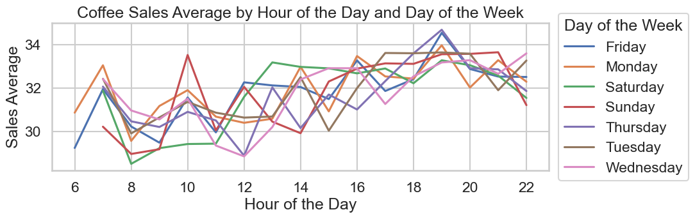
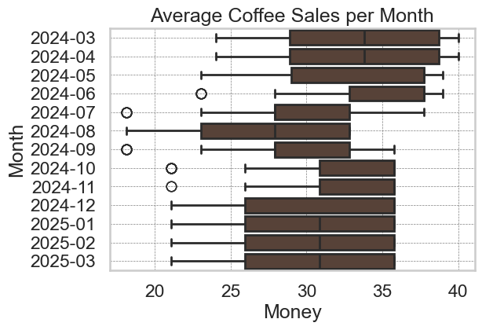
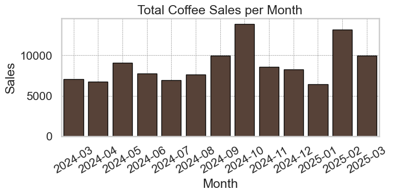
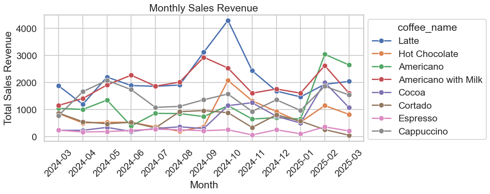
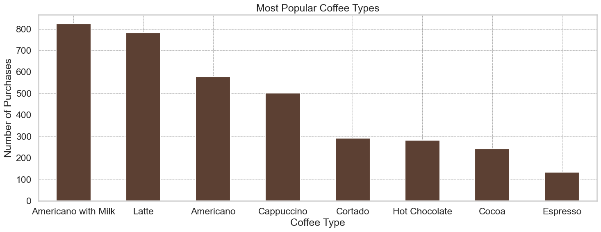
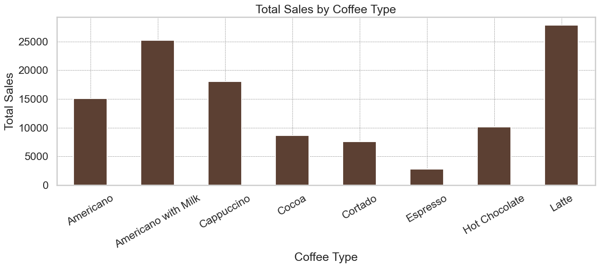

Hourly Coffee Sales

Sales rise sharply from 8 AM, peak around 10–12 AM, and slowly decline in the afternoon. Morning coffee rush is clearly the dominant pattern.
Discover patterns in coffee sales through comprehensive visual analysis
Interactive line chart showing monthly coffee sales. Click on legend items to toggle visibility.
Bar chart with hover effects and animations. Click on a bar to filter all data by that coffee type.

Sales rise sharply from 8 AM, peak around 10–12 AM, and slowly decline in the afternoon. Morning coffee rush is clearly the dominant pattern.

Different coffee types peak at different times. Latte and Americano with Milk surge in the morning, while Espresso peaks later in the afternoon. Preferences are time-dependent and drink-specific.

Daily sales show recurring cycles and significant weekend variation. High-demand periods appear around early fall.

Across all weekdays, 10–12 AM is consistently the busiest period. Fridays show higher afternoon sales, Sundays remain low.

Average hourly spending peaks in late morning. Monday and Tuesday have the highest averages, suggesting workweek coffee reliance.

Sales variability is highest in summer months, while fall months show tighter distributions and higher medians. Seasonality is evident.

Peaks occur in October and February, while March, April, and July are lower. Fall and winter are high-demand seasons.

Most drinks follow predictable monthly patterns. Hot Chocolate and Cocoa increase in cold months, confirming weather-driven taste preferences.

Most purchased: Americano with Milk, followed by Latte. Espresso is least popular. Customers prefer smoother, milk-based drinks.

Latte generates the highest revenue despite not being the most purchased. High-value drinks drive revenue more than quantity.